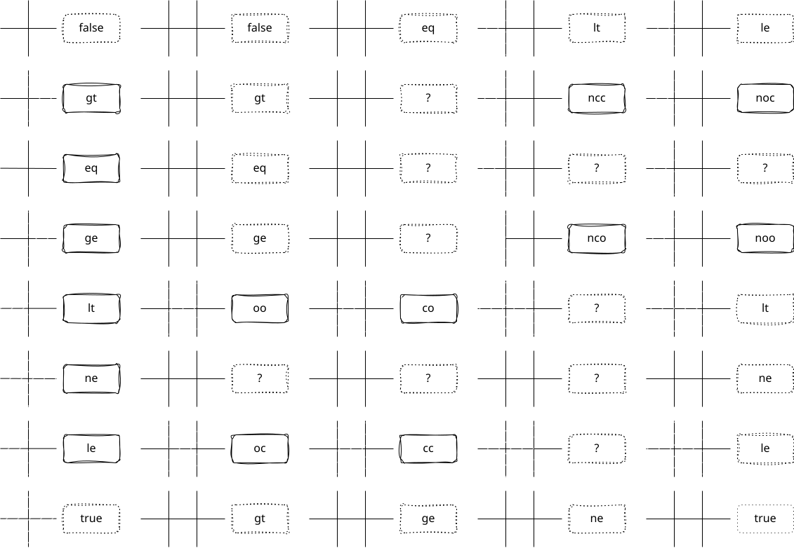

interval
intervals... defined on a dense set of numbers. daamath provides a few important functions for interval
introduction

API implementation
lt(a, b):
less than
a < b
le(a, b):
less than or equal to
a ≤ b
eq(a, b):
equal
a = b
ne(a, b):
not equal
a ≠ b
ge(a, b):
greater than or equal to
a > b
gt(a, b):
greater than
a ≥ b
oo(x, a, b):
in open interval
x ∈ (a, b)
oc(x, a, b):
in left-open interval
x ∈ (a, b]
co(x, a, b):
in right-open interval
x ∈ [a, b)
cc(x, a, b):
in closed interval
x ∈ [a, b]